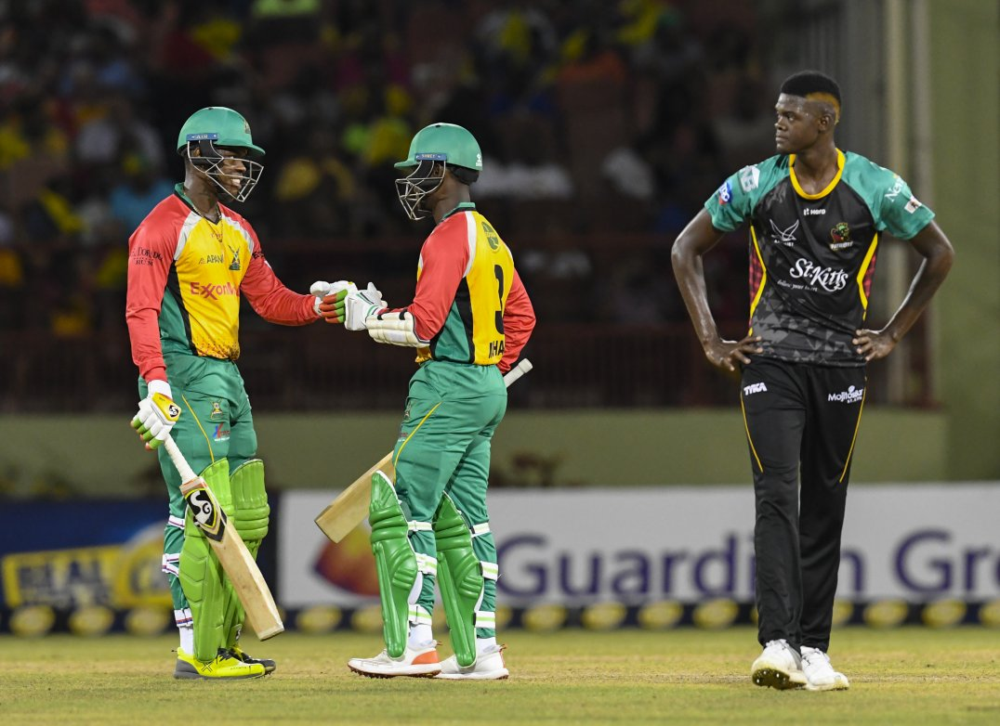

HETMEYER FIRES WARRIORS TO BIG WIN
Shimron Hetmeyer’s stunning unbeaten 79 from 45 balls steered Guyana Amazon Warriors from 24/3 to an ultimately comfortable six-wicket victory over St Kitts & Nevis Patriots in their 2018 Hero Caribbean Premier League (CPL) opener at Providence Stadium.
For Hetmeyer it was a first Hero CPL half-century in only his second appearance, and he ensured there would be no late drama as he continued to pepper the boundaries after reaching that landmark to see his side home. Fittingly, he was the man to provide the finishing touch as he drilled Alzarri Joseph back down the ground for the winning boundary with three-and-a-half overs remaining.
The Amazon Warriors did well to restrict the Patriots to 146/5 despite a well-crafted 86 from Chris Gayle, but it looked an imposing total when three of Guyana’s key men came and went inside the first three overs of the chase. Luke Ronchi and Shoaib Malik – after three boundaries in four balls – both fell to Sheldon Cottrell, while Chadwick Walton was caught at cover from the hugely impressive Nepal teenager Sandeep Lamichhane’s first Hero CPL delivery.
However, Gayle’s decision to throw the ball to Tom Cooper for the fourth over handed the initiative back to the Amazon Warriors. Cooper started his spell with three full-tosses; Hetmeyer sent the first to the boundary and the next two beyond it. The over cost 17 in all, and things were about to get worse still for the Patriots.
Joseph, whose 1.3 overs cost a whopping 28, started the next over with a no-ball that Hetmeyer carved through the off-side for four, before the subsequent free-hit was deposited over wide long-on for six.
Two overs later, it was back to the full-toss problem as an Anton Devcich no-ball was smeared over the square-leg boundary for six by Jason Mohammed, with the free-hit again producing another boundary.
In a flash, the 50 partnership was raised from just 22 balls and the Amazon Warriors were well on course for victory.
Amidst the carnage, though, Lamichhane was producing a gem of a spell in his first Hero CPL appearance. He had Mohammed caught on the cover boundary by a juggling Cooper and ended with remarkable figures of 2/12 from four overs of accurate, teasing leg-spin.
But with the required rate now below a run a ball thanks to the earlier fireworks, time was on the Amazon Warriors’ side. Hetmeyer found a willing ally in Australian all-rounder Chris Green (25* off 23) as Guyana romped home with 21 balls to spare.
The first half of the night was all about Gayle. Despite clipping the first ball of the innings from Sohail Tanvir for four, it was a watchful start from the Universe Boss. He was happy to take singles and it wasn’t until the ninth over of the innings that he cleared the ropes for his first Hero Maximum.
Four more followed, though, as he accelerated towards what looked like being another T20 century until he was caught in the deep 14 short off leg-spinner Imran Tahir by Sherfane Rutherford, who then held on to a steepler in the final over to remove Devcich to hand Keemo Paul a deserved second wicket as the U19 World Cup winner ended his night’s work with 2/16.
Both sides are back in action on Saturday, with the Amazon Warriors hosting the St Lucia Stars here at Providence Stadium while the Patriots head to Trinidad to take on the defending champions Trinbago Knight Riders.
Upcoming Fixtures:
Friday 10 August – Trinbago Knight Riders v Jamaica Tallawahs (8pm), Queen’s Park Oval.
Saturday 11 August – Guyana Amazon Warriors v St Lucia Stars (4pm), Providence Stadium; Trinbago Knight Riders v St Kitts & Nevis Patriots (8pm), Queen’s Park Oval.